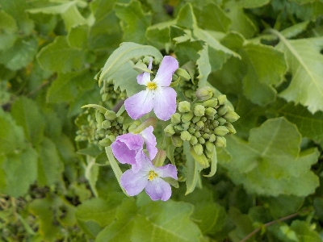
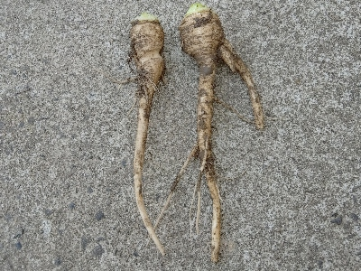
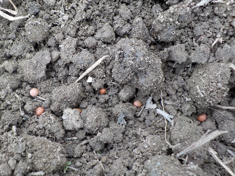
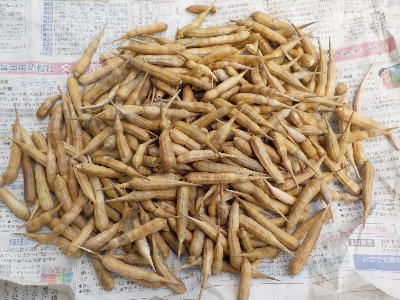
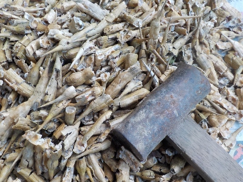

遊びで植物を育てよう
2025/04/12
実生の大根の花が咲いています。

花が咲いたせいか？大根の水分が減って固くなっています。
食べれるうちにドンドン食べて消費するようにしています。
【大根TOP】
【野菜TOP】
【園芸TOP】
2025/02/02
実生の大根を収穫して食べています。

辛み大根なのでちょっと変わった形をしています。
実生なので個体によっていろいろ変化があるのかと思ったんですが、大きい小さいはありますが見た目も味もほぼ同じでした。
沢山タネをまいたので沢山育っていますが、薬味の大根ってあんまり食べないですね。なので普通にお味噌汁に入れて食べたりしています。
【大根TOP】
【野菜TOP】
【園芸TOP】
2024/10/06
実生大根の種蒔きをしました。

タネが大量にあるので、とっても密に筋蒔きしました。
沢山間引いたのが食べれるといいな。
まだまだタネが大量にあまっているけど、そんなに食べれないので残りは来年用にしようかな。
【大根TOP】
【野菜TOP】
【園芸TOP】
2024/08/31
大根のサヤはとても硬いですね。

大量の大根のタネです。サカからタネを手で取り出そうとしましたが、硬くてできませんでした。

カナズチでガンガンたたいて、サヤを破壊してタネを取り出しました。
サヤはボロボロですが、タネはきっと生きているんでしょう。これだけ大量にあるので、発芽率が低くても何の問題もないでしょう。
【大根TOP】
【野菜TOP】
【園芸TOP】
大根のタネを収穫します。
【おいしいものを食べよう。】【しっかり寝よう。】
【ソロ活をしよう!】【季節感のあることをしよう。】【動画視聴はほどほどに。】【当サイトの全てのコンテンツは無断転載禁止です。】